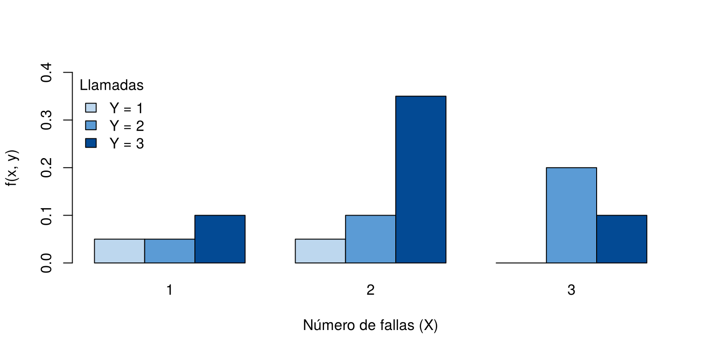
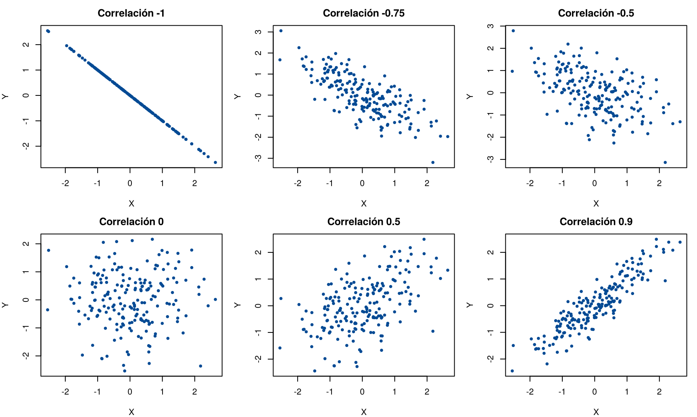
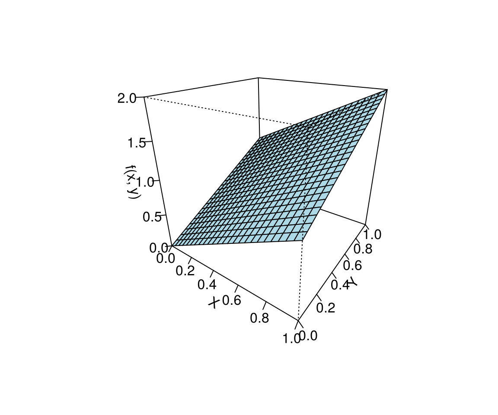

Muchas veces interesa estudiar dos variables a la vez: el precio de un producto y sus ventas, las horas de estudio y la nota del examen, la cantidad de abono y la producción de una planta. Para saber si están relacionadas no basta con estudiar cada una por separado; hay que describir cómo se comportan juntas.
Esta página presenta la distribución conjunta de dos variables, las distribuciones marginales y condicionales, la independencia, la covarianza y la correlación. Se trabaja sobre todo con variables discretas, organizadas en tablas, y al final se muestra el caso continuo. Los bloques de código se ejecutan en orden.
Si \(X\) e \(Y\) son variables discretas, su función de probabilidad conjunta da la probabilidad de que tomen, a la vez, los valores \(x\) e \(y\):
\[ f(x, y) = P(X = x,\ Y = y) \]
Igual que en una sola variable, ninguna probabilidad es negativa y todas suman 1. La forma natural de presentarla es una tabla, con los valores de \(X\) en las filas y los de \(Y\) en las columnas.
En una planta se registran \(X\): número de fallas de una máquina en un día, y \(Y\): número de veces que el operario llama al técnico ese día. Las dos toman valores 1, 2 o 3. Su distribución conjunta es:
| \(Y = 1\) | \(Y = 2\) | \(Y = 3\) | |
|---|---|---|---|
| \(X = 1\) | 0.05 | 0.05 | 0.10 |
| \(X = 2\) | 0.05 | 0.10 | 0.35 |
| \(X = 3\) | 0.00 | 0.20 | 0.10 |
Por ejemplo, la probabilidad de que en un día haya 2 fallas y 3 llamadas es \(f(2, 3) = 0.35\). En R, la tabla se guarda como una matriz:
fxy <- matrix(c(0.05, 0.05, 0.10,
0.05, 0.10, 0.35,
0.00, 0.20, 0.10),
nrow = 3, byrow = TRUE,
dimnames = list(X = c("1", "2", "3"), Y = c("1", "2", "3")))
fxy Y
X 1 2 3
1 0.05 0.05 0.10
2 0.05 0.10 0.35
3 0.00 0.20 0.10sum(fxy) # las probabilidades conjuntas suman 1[1] 1La figura muestra cada probabilidad conjunta como una barra, agrupada por el número de fallas:
barplot(t(fxy), beside = TRUE, col = c("#BDD7EE", "#5B9BD5", "#034A94"), ylim = c(0, 0.4),
xlab = "Número de fallas (X)", ylab = "f(x, y)",
legend.text = c("Y = 1", "Y = 2", "Y = 3"), args.legend = list(x = "topleft", title = "Llamadas", bty = "n"))
Distribución conjunta del número de fallas (X) y de llamadas al técnico (Y).
A partir de la tabla conjunta se obtiene la distribución de cada variable por separado, sin tener en cuenta la otra. Se llaman distribuciones marginales porque quedan en los márgenes de la tabla:
addmargins(fxy) Y
X 1 2 3 Sum
1 0.05 0.05 0.10 0.2
2 0.05 0.10 0.35 0.5
3 0.00 0.20 0.10 0.3
Sum 0.10 0.35 0.55 1.0g <- rowSums(fxy) # marginal de X
h <- colSums(fxy) # marginal de Y
g 1 2 3
0.2 0.5 0.3 h 1 2 3
0.10 0.35 0.55 | \(Y = 1\) | \(Y = 2\) | \(Y = 3\) | \(g(x)\) | |
|---|---|---|---|---|
| \(X = 1\) | 0.05 | 0.05 | 0.10 | 0.20 |
| \(X = 2\) | 0.05 | 0.10 | 0.35 | 0.50 |
| \(X = 3\) | 0.00 | 0.20 | 0.10 | 0.30 |
| \(h(y)\) | 0.10 | 0.35 | 0.55 | 1 |
Por ejemplo, la probabilidad de que en un día haya 2 fallas, sin importar cuántas llamadas, es \(g(2) = 0.50\), y la probabilidad de que haya 3 llamadas es \(h(3) = 0.55\).
Si se sabe el valor de una variable, la distribución de la otra cambia. La distribución condicional de \(X\) dado \(Y = y\) es
\[ f(x \mid y) = \frac{f(x, y)}{h(y)} \]
Es la misma idea de la probabilidad condicional de Tipos de probabilidad: se toma solo la columna de \(Y = y\) y se divide por su total.
Por ejemplo, en los días en que el operario llama 2 veces al técnico (\(h(2) = 0.35\)), la distribución del número de fallas es
\[ f(1 \mid 2) = \frac{0.05}{0.35} = 0.143, \quad f(2 \mid 2) = \frac{0.10}{0.35} = 0.286, \quad f(3 \mid 2) = \frac{0.20}{0.35} = 0.571 \]
round(fxy[, "2"] / h["2"], 3) # f(x | Y = 2) 1 2 3
0.143 0.286 0.571 round(prop.table(fxy, margin = 2), 3) # todas las condicionales de X dado Y Y
X 1 2 3
1 0.5 0.143 0.182
2 0.5 0.286 0.636
3 0.0 0.571 0.182Cada columna de la última tabla suma 1. En los días con 2 llamadas, lo más probable es que haya habido 3 fallas.
\(X\) e \(Y\) son independientes si saber el valor de una no cambia la distribución de la otra. Esto ocurre si, para todas las parejas de valores,
\[ f(x, y) = g(x)\,h(y) \]
Basta con que falle en una celda para que las variables sean
dependientes. En R, la función outer()
construye la tabla de productos \(g(x)\,h(y)\) para compararla con la
conjunta:
outer(g, h) # lo que tendría que ser la tabla si fueran independientes 1 2 3
1 0.02 0.070 0.110
2 0.05 0.175 0.275
3 0.03 0.105 0.165fxy - outer(g, h) # diferencias Y
X 1 2 3
1 0.03 -0.020 -0.010
2 0.00 -0.075 0.075
3 -0.03 0.095 -0.065Por ejemplo, \(f(1, 1) = 0.05\), pero \(g(1)\,h(1) = 0.20 \times 0.10 = 0.02\). Las fallas y las llamadas no son independientes.
La covarianza mide si dos variables tienden a moverse juntas en línea recta:
\[ \text{Cov}(X, Y) = E(XY) - E(X)\,E(Y), \qquad E(XY) = \sum_x \sum_y x\,y\,f(x, y) \]
| Signo de la covarianza | Interpretación |
|---|---|
| Positiva | Cuando una variable está por encima de su media, la otra tiende a estarlo también |
| Negativa | Cuando una variable está por encima de su media, la otra tiende a estar por debajo |
| Cero | No hay relación lineal entre las variables |
La covarianza depende de las unidades de las variables, así que su tamaño es difícil de interpretar. Por eso se usa el coeficiente de correlación, que siempre está entre −1 y 1:
\[ \rho = \frac{\text{Cov}(X, Y)}{\sigma_X\,\sigma_Y} \]
Un valor de \(\rho\) cercano a 1 o a −1 indica una relación lineal fuerte, y uno cercano a 0, una relación lineal débil o nula. La figura muestra cómo se ven datos con distintos valores de \(\rho\):
set.seed(2026)
par(mfrow = c(2, 3), mar = c(4, 4, 2.5, 1))
z1 <- rnorm(200)
z2 <- rnorm(200)
for (r in c(-1, -0.75, -0.5, 0, 0.5, 0.9)) {
y_sim <- r * z1 + sqrt(1 - r^2) * z2 # variable con correlación r con z1
plot(z1, y_sim, pch = 19, cex = 0.6, col = "#034A94",
xlab = "X", ylab = "Y", main = paste("Correlación", r))
}
Datos simulados de dos variables con distintos coeficientes de correlación.
x <- 1:3
y <- 1:3
EX <- sum(x * g)
EY <- sum(y * h)
EXY <- sum(outer(x, y) * fxy) # suma de x * y * f(x, y)
covarianza <- EXY - EX * EY
sd_X <- sqrt(sum(x^2 * g) - EX^2)
sd_Y <- sqrt(sum(y^2 * h) - EY^2)
c(E_X = EX, E_Y = EY, E_XY = EXY, Cov = covarianza, rho = covarianza / (sd_X * sd_Y)) E_X E_Y E_XY Cov rho
2.10000000 2.45000000 5.15000000 0.00500000 0.01067764 \(E(X) = 2.10\), \(E(Y) = 2.45\) y \(E(XY) = 5.15\), así que \(\text{Cov}(X, Y) = 5.15 - 2.10 \times 2.45 = 0.005\) y \(\rho = 0.011\). La relación lineal entre fallas y llamadas es prácticamente nula, aunque las variables no son independientes: la relación existe, pero no es una línea recta.
Si dos variables son independientes, su covarianza es cero. Lo contrario no siempre es cierto: una covarianza cero solo dice que no hay relación lineal. Por ejemplo, si \(X\) toma los valores −1, 0 y 1 con la misma probabilidad y \(Y = X^2\), la covarianza es cero, pero \(Y\) depende por completo de \(X\). Se comprueba en el Reto 3.
En Valor esperado y varianza se vio que, si \(X\) e \(Y\) son independientes, \(\text{Var}(aX + bY) = a^2\,\text{Var}(X) + b^2\,\text{Var}(Y)\). Si no lo son, hay que sumar un término con la covarianza:
\[ \text{Var}(aX + bY) = a^2\,\text{Var}(X) + b^2\,\text{Var}(Y) + 2ab\,\text{Cov}(X, Y) \]
Si \(X\) e \(Y\) son continuas, su distribución conjunta se describe con una función de densidad conjunta, \(f(x, y)\), cuya gráfica es una superficie. La probabilidad de que \((X, Y)\) caiga en una región es el volumen bajo la superficie sobre esa región. Las ideas son las mismas del caso discreto, pero las sumas se reemplazan por integrales.
Por ejemplo, las proporciones de dos ácidos, \(X\) e \(Y\), en una mezcla tienen densidad conjunta \(f(x, y) = x + y\) para \(0 \leq x \leq 1\) y \(0 \leq y \leq 1\). La figura muestra la superficie: es más alta cuando las dos proporciones son grandes.
gx <- seq(0, 1, length.out = 25)
gy <- seq(0, 1, length.out = 25)
z <- outer(gx, gy, function(x, y) x + y)
persp(gx, gy, z, theta = 35, phi = 25, col = "lightblue", ticktype = "detailed",
xlab = "X", ylab = "Y", zlab = "f(x, y)")
Densidad conjunta f(x, y) = x + y en el cuadrado unitario.
En R, las marginales se comprueban con
integrate(). Por ejemplo, el área bajo \(g(x)\) debe ser 1 y \(E(X)\) debe ser \(7/12 = 0.583\):
g_cont <- function(x) x + 1/2
integrate(g_cont, 0, 1)$value # área total[1] 1integrate(function(x) x * g_cont(x), 0, 1)$value # E(X)[1] 0.5833333| Problema | Causa | Solución |
|---|---|---|
| Las marginales salen intercambiadas | Se sumaron columnas para \(X\) o filas para \(Y\) | Con \(X\) en las
filas, \(g(x)\) es la suma de cada fila
(rowSums()) |
| Una distribución condicional no suma 1 | Se dividió por un total equivocado | Dividir la columna (o fila) por su propio total |
| Concluir independencia revisando una sola celda | La condición debe cumplirse en todas | Comparar toda la tabla con
outer(g, h) |
| Concluir independencia porque la covarianza es cero | La covarianza solo mide relación lineal | Revisar \(f(x, y) = g(x)\,h(y)\) |
| Interpretar el tamaño de la covarianza | Depende de las unidades | Usar el coeficiente de correlación |
En el ejemplo de la planta, encuentre la distribución del número de llamadas en los días con 2 fallas. ¿Cuál es el número de llamadas más probable?
Se toma la fila \(X = 2\) y se divide por \(g(2) = 0.50\):
fxy["2", ] / g["2"] 1 2 3
0.1 0.2 0.7 En los días con 2 fallas, lo más probable es que haya 3 llamadas, con probabilidad 0.7.
Una tabla conjunta tiene marginales \(g(x) = (0.4,\ 0.6)\) y \(h(y) = (0.3,\ 0.7)\). Construya la tabla que tendrían que tener \(X\) e \(Y\) si fueran independientes.
Cada celda es el producto de sus marginales:
outer(c(0.4, 0.6), c(0.3, 0.7)) [,1] [,2]
[1,] 0.12 0.28
[2,] 0.18 0.42\(X\) toma los valores −1, 0 y 1 con probabilidad 1/3 cada uno, y \(Y = X^2\). Calcule \(\text{Cov}(X, Y)\) y muestre que \(X\) e \(Y\) no son independientes.
\(E(X) = 0\) y \(E(XY) = E(X^3) = 0\), así que \(\text{Cov}(X, Y) = 0\). Pero \(P(X = 0,\ Y = 1) = 0\), mientras que \(P(X = 0)\,P(Y = 1) = \tfrac{1}{3} \times \tfrac{2}{3} = \tfrac{2}{9}\): no son independientes.
x_r3 <- c(-1, 0, 1)
p_r3 <- rep(1/3, 3)
y_r3 <- x_r3^2
sum(x_r3 * y_r3 * p_r3) - sum(x_r3 * p_r3) * sum(y_r3 * p_r3) # Cov(X, Y)[1] 0En el ejemplo de la planta, calcule la varianza del total de eventos del día, \(X + Y\) (fallas más llamadas). Compárela con \(\text{Var}(X) + \text{Var}(Y)\).
\(\text{Var}(X + Y) = \text{Var}(X) + \text{Var}(Y) + 2\,\text{Cov}(X, Y) = 0.49 + 0.4475 + 2 \times 0.005 = 0.9475\). Como la covarianza es casi cero, el resultado es casi igual a \(\text{Var}(X) + \text{Var}(Y) = 0.9375\).
c(Var_suma = sd_X^2 + sd_Y^2 + 2 * covarianza, sin_covarianza = sd_X^2 + sd_Y^2) Var_suma sin_covarianza
0.9475 0.9375 matrix(),
addmargins(), outer(), persp() e
integrate().Última revisión: 7 de noviembre de 2026.